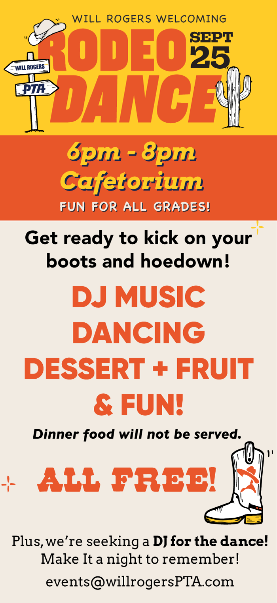

Este viernes · 25 de sept. · 6–8 p. m.
Baile Rodeo de Bienvenida
¡Ponte las botas y ven a bailar! Música con DJ, baile, postre y fruta en el Cafetorium. Diversión para todos los grados, y todo es gratis. No se servirá cena.
Santa Mónica · Bachillerato Internacional
Padres, maestros y vecinos trabajando juntos por cada niño y niña de Will Rogers Learning Community.
Marca tu calendario

Este viernes · 25 de sept. · 6–8 p. m.
¡Ponte las botas y ven a bailar! Música con DJ, baile, postre y fruta en el Cafetorium. Diversión para todos los grados, y todo es gratis. No se servirá cena.
Hasta el 2 de oct.
¡Lee más, haz más, un mañana más brillante! Se extendió una semana más: inscribe a tu lector, registra minutos y reúne donativos. Cada página leída y cada donación apoya los programas de la PTA, con premios para lectores, recaudadores y salones enteros.

Vie. 9 de oct. · 5:30 p. m.
¡Haz arte, conecta y gana premios! Crea una obra para el tema de este año, «Lo que mi cultura significa para mí», con la ayuda de voluntarios expertos, y participa por una tarjeta de regalo de $25 de Blick. Las obras se entregan hasta el 16 de octubre.
Reserva la fecha
Subasta en línea del 6 al 14 de noviembre, con la celebración de la Noche de Adultos el sábado 14 de noviembre. ¿Quieres donar un artículo? Descarga el formulario.
🎉 ¡Hurra!
Nuestra PTA obtuvo la designación National PTA School of Excellence 2025–2027 (Escuela de Excelencia) y fue reconocida con el Phoebe Apperson Hearst Family-School Partnership Award of Merit, uno de los más altos honores nacionales de la PTA por fortalecer la colaboración entre las familias y la escuela. ¡Gracias a toda nuestra comunidad — este premio es suyo!
Sobre el programaWill Rogers Learning Community es una orgullosa Escuela del Mundo del Bachillerato Internacional®.
La Asociación de Padres y Maestros (PTA) de Will Rogers está formada por padres, familiares, maestros, personal y miembros de la comunidad dedicados a impactar positivamente la vida de todos los niños y familias de Will Rogers Learning Community, una escuela primaria de Bachillerato Internacional en Santa Mónica, California.
Nuestro boletín semanal de los miércoles reúne todas las inscripciones, fechas y recordatorios en un solo lugar. Ponte al día con los enlaces más recientes, o síguenos en Instagram y Facebook.
Enlaces e InscripcionesYa sea que tengas una hora libre o la energía de todo un comité, tu familia hace más fuerte a Will Rogers. Únete, dona o echa una mano: cada aporte cuenta.
La PTA es la organización de defensa de la niñez más grande del país. La membresía cuesta $11 y demuestra que la educación es importante para ti. Cada miembro puede votar sobre decisiones importantes de nuestra escuela en las reuniones mensuales de la asociación.
+ InscríbeteLa PTA de Will Rogers es una organización 501(c)3 y todas las donaciones son deducibles de impuestos. Una donación directa tiene el mayor impacto y apoya a cada estudiante y a cada salón, ayudándonos a pagar excursiones, la biblioteca, eventos comunitarios, útiles escolares y mucho más.
+ DonarMantente conectado e informado leyendo nuestro boletín semanal, con información sobre próximos eventos y recaudaciones de toda la escuela, oportunidades importantes, alertas de defensa, anuncios de reuniones de la PTA y mucho más.
+ Últimas NoticiasLas reuniones de la PTA son en persona, de 8:30 a 9:30 a. m., el primer miércoles de cada mes en la biblioteca — ¡ven por café y pan dulce! Hay opción virtual para quienes necesiten participar desde casa. Las agendas se publican antes de cada reunión.
+ Información de ReunionesNuestra PTA es una organización de voluntarios formada por padres, familiares, maestros, personal y miembros de la comunidad como tú, que quieren tener un impacto positivo en la vida de los estudiantes. Hay muchas maneras de participar.
+ Más Información¡Queremos saber de ti! Encuentra cómo comunicarte con los oficiales de la PTA y buscar comités específicos. Encuentra enlaces a nuestro Consejo, Distrito, PTA Estatal y Nacional, y otros recursos útiles.
+ Contactar a la PTA